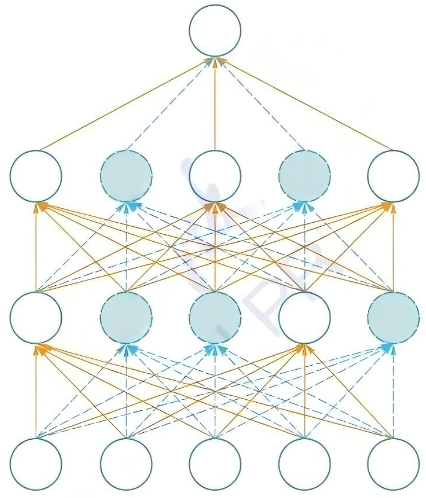

5.7
深度神经网络结构复杂、参数众多，很容易造成过拟合（over-fitting）。为了缓解神经网络在训练过程中出现的过拟合现象，需要采取一些正则化技术来提升神经网络的泛化能力（generalization）。
1. Dropout
Dropout 指在训练神经网络的过程中随机丢掉一部分神经元来降低神经网络的复杂度，从而防止过拟合。Dropout 的实现方法很简单：在每次迭代训练中，以一定概率随机屏蔽每一层中的若干神经元，用余下神经元构成的网络继续训练，如图 5.22 所示。

图 5.22 使用Dropout的神经网络模型
2. 批归一化
随着神经网络深度的增加，输入数据经过激活函数若干次非线性变换后，其整体分布逐渐向非线性函数的值域上下限两端偏移。例如，对于 sigmoid 函数来说，它所接收的输入往往是数值较大的正数或者负数，因此在经过 sigmoid 函数非线性变换后，输出结果大多偏向于 1 或者 0。在 1 或 0 附近，sigmoid 函数的梯度较小，因此导致在反向传播时，靠近输入端处容易出现梯度消失问题，致使网络收敛很缓慢。
批归一化（batch normalization）就是通过规范化手段，把神经网络每层中任意神经元的输入值分布改变成均值为 0、方差为 1 的标准正态分布，把偏移较大的分布强制映射为标准正态分布。经过批归一化处理，激活函数的输入值被映射到非线性函数梯度较大的区域，使得梯度变大从而克服梯度消失问题，进而加快收敛速度。
3. \(L_1\) 和 \(L_2\) 正则化
对于具有 \(n\) 个训练数据 \(\{(x_1,y_1),\cdots,(x_n,y_n)\}\) 的神经网络，其中 \((x_i,y_i)\ (1\le i\le n)\) 分别为输入样本及其对应的标签。加入正则化项后，神经网络的损失函数一般可如下表示：
其中，\(f(\boldsymbol{W},x_i)\) 表示参数为 \(\boldsymbol{W}\) 的神经网络对输入 \(x_i\) 的预测，\(\Phi(\boldsymbol{W})\) 为正则化项（又称惩罚项），\(\lambda\) 为正则化权重。
正则化项 \(\Phi(\boldsymbol{W})\) 一般用模型参数 \(\boldsymbol{W}\) 的范数形式来表示。假设神经网络模型中的参数数目为 \(l\)，则参数的范数形式主要有如下三种：
\(L_0\) 范数：数学表示为 \(\|\boldsymbol{W}\|_0=\sum_{i=1}^{l}\mathbb{I}\,[w_i \neq 0]\)，其中 \(\mathbb{I}\) 是指示函数，若括号内表达式为真，则函数值为 1，反之为 0。因此，\(L_0\) 范数指模型参数 \(\boldsymbol{W}\) 中的非零元素个数。\(L_0\) 范数可实现模型参数的稀疏化。但是，由于 \(L_0\) 范数正则化是一个 NP 难（NP hard）问题，难以求解，因此一般不用 \(L_0\) 范数。
\(L_1\) 范数：数学表示为 \(\|\boldsymbol{W}\|_1=\sum_{i=1}^{l}|w_i|\)，指模型参数 \(\boldsymbol{W}\) 中各个元素的绝对值之和。\(L_1\) 范数也被称为“稀疏规则算子（lasso regularization）”。
\(L_2\) 范数：数学表示为 \(\|\boldsymbol{W}\|_2=\sqrt{\sum_{i=1}^{l}w_i^2}\)，指模型参数 \(\boldsymbol{W}\) 中各个元素平方和的开方。